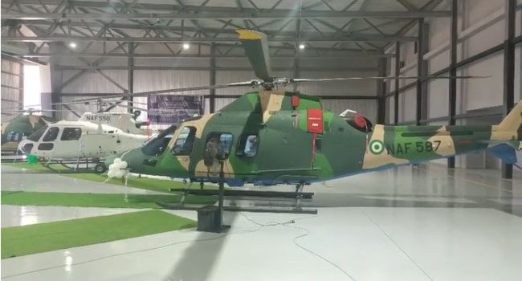

Tinubu To Induct Five Helicopters Acquired By NAF

President Bola Tinubu is expected to induct five helicopters acquired by the Nigerian Air Force (NAF) at a ceremony in Abuja. He is also expected to commission the service’s newly reconstructed hangar, where the aircraft are housed.
The helicopters comprise two H-125s manufactured by Airbus Helicopters and three AW-109 Trekker Bs made by Italy’s Leonardo Helicopters. The induction is scheduled to take place at the hangar on the presidential wing of Nnamdi Azikiwe International Airport.
The NAF received the aircraft in stages. The two H-125 helicopters had been delivered earlier, while the three AW-109 Trekker Bs arrived in Lagos as part of a separate batch of 10 helicopters acquired by the Federal Government. The other seven aircraft in that batch are expected to be delivered before the end of 2026.
The acquisition is part of the Federal Government’s investment in strengthening the air force’s operational capabilities. It also comes amid broader efforts to modernise and re-equip the Armed Forces to respond to evolving security threats and sustain operations against insecurity.
Source: Channels TV